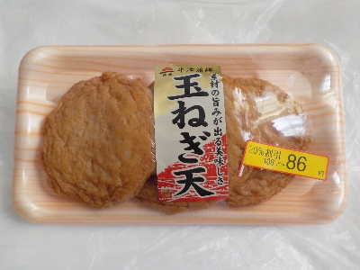

牛津蒲鉾の玉ねぎ天
更新日 : 2024/04/18

素材の旨味が出る美味しさ玉ねぎ天です。玉ねぎ味の天ぷらは美味しいですね。
小さめの蒲鉾は味が薄く感じたりしますが、この商品は味付けがうまく出来てて、物足りないとは感じませんでした。
お手頃価格のいい商品です。
佐賀県小城市牛津町勝1464番地
更新日 : 2024/04/18

素材の旨味が出る美味しさ玉ねぎ天です。玉ねぎ味の天ぷらは美味しいですね。
小さめの蒲鉾は味が薄く感じたりしますが、この商品は味付けがうまく出来てて、物足りないとは感じませんでした。
お手頃価格のいい商品です。